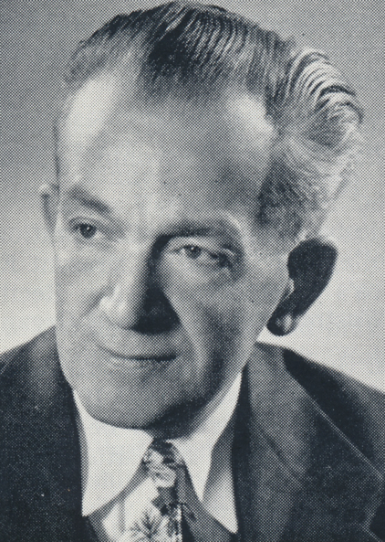

-1-MasterItem.svg)
Stories of Westminster United Church & its People / Page
168
Finally, in 1955, lung cancer carried Herb Sadler off. Herb loved to smoke. Half
way through church
choir practices a 15 minute recess was always declared. The men of the choir
retired to the large
men’s washroom in the basement of the church for a “spit and a puff.” (Herb’s phrase.) There we
would smoke, toss pennies against the wall and, of course, answer nature’s call. A bonding time
for the men. But Herb’s ultimate undoing.
No question, Herb was loved and respected by all who served
under him. He was an Anglican — he would have us point the
Psalms during rehearsals, purely as an exercise and for our interest.
He was an Anglican — he had a couple of us, when in our teens
dress in white robes and light candles on the platform before
weddings. He was an Anglican — much of our repertoire came
from the pens of English (Brit) composers.
He was a gentle man with gentle wit (“All I can see is a front
row of heaving bosoms,” he would declare as a message that the
rest of us should work as hard as the sopranos.). He was a very
talented organist. After evening service some of the younger of
the choir would hang about asking him to do mini recitals for us.
He was a demanding choir director expecting and getting
the very best from every singer in his choir.
The writer knew him for only four and a half years before
his death, but treasures, to this day, the talent
and humanity of Herb Sadler.
Music at Westminster
